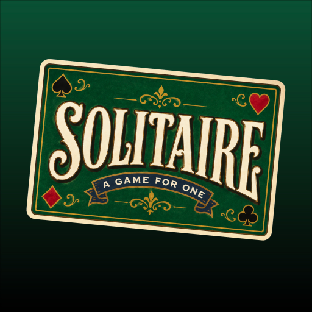

Automatic Tips can be turned off in Settings.
Enjoying the games? You can buy me a coffee if you'd like to help me keep making more.

Mike's Solitaire has a new icon. Because you're using the Home Screen version, iPhone won't update the icon automatically.
To get the new one:
Your Solitaire progress may still be there. If it isn't, use Restore Game Data in Settings.